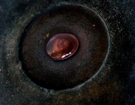

Neda
Narges Kalhor
Deutschland 2014
4 min – 35mm auf HD – pers. OmeU
B+P: Narges Kalhor
Wasser, das auf dem Feuer tanzt, ist wunderschön – bis sich der Gedanke an das (Ver-)Brennen in den Anblick hineinstiehlt.
montag 12 okt 22.30 uhr werkstattkino
Narges Kalhor geb. 1984 in Teheran, Iran. Studium an der Hochschule für Fernsehen und Film in Teheran. Als sie 2009 mit ihrem Kurzfilm DIE EGGE aus dem Iran nach Nürnberg zum Internationalen Nürnberger Filmfestival der Menschenrechte kommt, muss sie in Deutschland politisches Asyl beantragen. Seit 2010 Studium Dokumentarfilmregie an der Hochschule für Fernsehen und Film München.
Filme (Auswahl) We must have died! 2006 – Die Egge 2008 – München-Teheran 2010 – Zwei Gesichter 2013 – Shoot me! 2013 – Kafan 2014 (9. UX) – Lavaschak 2014 (10. UX)